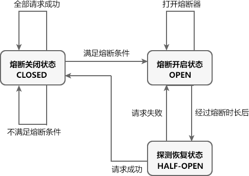

Sentinel：Spring Cloud Alibaba高可用流量控制组件（非常详细）
Sentinel 是由阿里巴巴中间件团队开发的开源项目，是一种面向分布式微服务架构的轻量级高可用流量控制组件。
Sentinel 主要以流量为切入点，从流量控制、熔断降级、系统负载保护等多个维度帮助用户保护服务的稳定性。
Sentinel 具有以下优势:
Sentinel 核心库不依赖 Sentinel Dashboard，但两者结合使用可以有效的提高效率，让 Sentinel 发挥它最大的作用。
Sentinel 控制台提供的功能如下:
Sentinel Dashboard 是我们配置和管理规则（例如流控规则、熔断降级规则等）的重要入口之一。通过它，我们不仅可以对规则进行配置和管理，还能实时查看规则的效果。
1. 使用浏览器访问 Sentinel Dashboard 下载页面下载 Sentinel 控制台的 jar 包，如下图。
图1：Sentinel 控制台下载
2. 打开命令行窗口，跳转到 Sentinel Dashboard jar 包所在的目录，执行以下命令，启动 Sentinel Dashboard。
3. 启动完成后，使用浏览器访问“http://localhost:8080/”，跳转到 Sentinel 控制台登陆页面，如下图。
图2：Sentinel 控制台登录页
4. 分别输入用户名和密码（默认都是 sentinel），点击下方的登录按钮，结果如下图。
图3：Sentinel 控制台主页
下面我们就通过一个简单的实例，演示如何将 Sentinel 整合到 Spring Cloud 项目中，步骤如下。
1. 在主工程 spring-cloud-alibaba-demo 下，创建一个名为 spring-cloud-alibaba-sentinel-service-8401 的 Spring Boot 模块，并在其 pom.xml 中添加以下依赖。
2. 在 spring-cloud-alibaba-sentinel-service-8401 的类路径下，新建一个配置文件 application.yml，配置内容如下。
3. 在 net.biancheng.c.controller 下，创建一个名为 SentinelFlowLimitController 的 Controller 类，代码如下。
4. spring-cloud-alibaba-sentinel-service-8401 主启动类代码如下。
5. 依次启动 Nacos Server 集群、 spring-cloud-alibaba-sentinel-service-8401，使用浏览器访问“http://localhost:8401/testA”，结果如下图。
图4：Sentinel 示例 1
6. 使用浏览器访问 Sentinel 控制台主页，我们发现在“首页”下方新增了一个“sentinel-servcie”的菜单，而这正是 spring-cloud-alibaba-sentinel-service-8401 的服务名（spring.application.name），说明 Sentinel 已经监控到这个服务，如下图。
图5：Sentinel 控制台主页
7. 点击“实时监控”，查看 sentinel-service 下各请求的实时监控数据，如下图所示。
Sentinel 为我们提供了多种定义资源的方式：
我们可以在 Sentinel 控制台的“簇点链路”中，直接查看被 Sentinel 监控的资源，如下图。
图7：Sentinel 控制台-簇点链路
下面我们就通过一个实例，来演示下如何通过 SphU 定义资源。
1. 在 spring-cloud-alibaba-sentinel-service-8401 下的 SentinelFlowLimitController 中，新增一个 testAbySphU() 方法定义一个名为 testAbySphU 的资源，代码如下。
2. 重启 spring-cloud-alibaba-sentinel-service-8401，使用浏览器访问“http://localhost:8401/testA”，结果如下。
3. 访问 Sentinel 控制台主页，点击 sentinel-service 下的“簇点链路”，结果如下图。
图8：Sentinel 通过 SphU 定义资源
下面我们就通过一个实例，来演示下如何通过 SphO 定义资源。
1. 在 spring-cloud-alibaba-sentinel-service-8401 下的 SentinelFlowLimitController 中，新增一个 testBbySphO() 方法定义一个名为 testBbySphO 的资源，代码如下。
2. 重启 spring-cloud-alibaba-sentinel-service-8401，使用浏览器访问“http://localhost:8401/testB”，结果如下。
3. 访问 Sentinel 控制台主页，点击 sentinel-service 下的“簇点链路”，结果如下图。
图9：Sentinel 通过 SphO 定义资源
下面我们就通过一个实例，来演示下如何通过 @SentinelResource 注解定义资源。
1. 将 spring-cloud-alibaba-sentinel-service-8401 中 SentinelFlowLimitController 类中增加以下代码。
2. 重启 spring-cloud-alibaba-sentinel-service-8401，使用浏览器访问“http://localhost:8401/testC”，结果如下。
3. 访问 Sentinel 控制台主页，点击 sentinel-service 下的“簇点链路”，结果如下图。
图10：Sentinel 注解方式定义资源
Sentinel 作为一种轻量级高可用流量控制组件，流量控制是它最主要的工作之一。
我们可以针对资源定义流控规则，Sentinel 会根据这些规则对流量相关的各项指标进行监控。当这些指标当达到或超过流控规则规定的阈值时，Sentinel 会对请求的流量进行限制（即“限流”），以避免系统被瞬时的流量高峰冲垮，保障系统的高可用性。
一条流量规则主要由下表中的属性组成，我们可以通过组合这些属性来实现不同的限流效果。
Sentinel 触发限流时，资源会抛出 BlockException 异常，此时我们可以捕捉 BlockException 来自定义被限流之后的处理逻辑。
1. 在 spring-cloud-alibaba-sentinel-service-8401 的 SentinelFlowLimitController 中新增一个名为 testD 的服务方法，代码如下。
2. 重启 spring-cloud-alibaba-sentinel-service-8401，使用浏览器访问“http://localhost:8401/testD”，结果如下。
3. 使用浏览器访问“http://localhost:8080”，登陆 Sentinel 控制台主页，点击 sentinel-sevice 下的“簇点链路”，结果如下图。
图11：Sentinel 控制台定义流控规则
4. 点击“/testD”右侧的“+流控”按钮，在弹出的“新增流控规则”窗口中定义流控规则，如下图。
图12：Sentinel 控制台定义流控规则
5. 点击下方的“新增”按钮，跳转到“流控规则”列表，如下图。
图13：Sentinel 控制台流控规则列表
若页面中出现以上信息，则说明该服务已被限流，但这种提示是 Sentinel 系统自动生成的，用户体验不好。
7. 在服务代码中使用 @SentinelResource 注解定义资源名称，并在 blockHandler 属性指定一个限流函数，自定义服务限流信息，代码如下。
7. 重启 spring-cloud-alibaba-sentinel-service-8401，使用浏览器访问 Sentinel 控制台主页，点击 sentinel-sevice 下的“簇点链路”，结果如下图。
图14：Sentinel 控制台-簇点链路
4. 点击资源“testD-resource”右侧的“+流控”按钮，并在弹出的“新增流控规则”窗口中为这个资源定义流控规则，流控规则内容为 ：QPS 的阈值为 2（即每秒最多通过 2 个请求），如下图。
图15：Sentinel 控制台新增流控规则
5. 快速连续（频率大于每秒钟 2 次）访问“http://localhost:8401/testD”，结果如下。
FlowRule 可以通过以下属性定义流控规则，如下表。
下面我们就通过一个简单的实例，来演示下如何通过代码定义流控规则，步骤如下。
1. 在 spring-cloud-alibaba-sentinel-service-8401 的 SentinelFlowLimitController 中添加一个 initFlowRules() 方法，为名为 testD-resource 的资源定义流控规则：每秒最多只能通过 2 个请求，即 QPS 的阈值为 2。
2. 在 testD() 方法中调用 initFlowRules() 方法，初始化流控规则，代码如下。
3. 重启 spring-cloud-alibaba-sentinel-service-8401，并使用浏览器访问“http://localhost:8401/testD”，结果如下。
4. 快速连续（频率大于每秒钟 2 次）访问“http://localhost:8401/testD”，结果如下。
5. 打开命令行窗口，执行以下命令查看资源的实时统计信息。
6. 控制台输出内容如下。
实时统计信息各列名说明如下：
在分布式微服务架构中，一个系统往往由多个服务组成，不同服务之间相互调用，组成复杂的调用链路。如果链路上的某一个服务出现故障，那么故障就会沿着调用链路在系统中蔓延，最终导致整个系统瘫痪。Sentinel 提供了熔断降级机制就可以解决这个问题。
Sentinel 的熔断将机制会在调用链路中某个资源出现不稳定状态时（例如调用超时或异常比例升高），暂时切断对这个资源的调用，以避免局部不稳定因素导致整个系统的雪崩。
熔断降级作为服务保护自身的手段，通常在客户端（调用端）进行配置，资源被熔断降级最直接的表现就是抛出 DegradeException 异常。
Sentinel 熔断降级中共涉及 3 种状态，如下表。
下面我们通过一个实例，来演示如何通过 Sentinel 控制台，对资源定义降级规则。
1. 在 MySQL 的 bianchengbang_jdbc 数据库中执行以下 SQL，准备测试数据。
2. 在主工程 spring-cloud-alibaba-demo 下，创建一个名为 spring-cloud-alibaba-provider-mysql-8003 的 Spring Boot 模块，并在其 pom.xml 中添加相关依赖，代码如下。
3. 在 spring-cloud-alibaba-provider-mysql-8003 的类路径下，创建一个配置文件 application.yml，配置如下。
4. 在 net.biancheng.c.entity 包下，创建一个名为 Dept 的实体类，代码如下。
5. 在 net.biancheng.c.entity 包下，创建一个名为 CommonResult 的 Java 类，代码如下。
6. 在 net.biancheng.c.mapper 包下，创建一个名为 DeptMapper 的接口，代码如下。
7. 在 spring-cloud-alibaba-provider-mysql-8003 的 /resources/mybatis/mapper/ 目录下，创建一个名为 DeptMapper.xml 的 MyBatis 映射文件，配置内容如下。
8. 在 net.biancheng.c.service 包下，创建一个名为 DeptService 的接口，代码如下。
9. 在 net.biancheng.c.service.impl 包下，创建 DeptService 接口的实现类 DeptServiceImpl，代码如下。
10. 在 net.biancheng.c.controller 包下，创建一个名为 DeptController 的 Contorller 类，代码如下。
11. spring-cloud-alibaba-provider-mysql-8003 的主启动类代码如下。
12. 在主工程 spring-cloud-alibaba-demo 下，创建一个名为 spring-cloud-alibaba-consumer-mysql-8803 的 Spring Boot 模块，并在其 pom.xml 添加依赖，内容如下。
13. 在 spring-cloud-alibaba-consumer-mysql-8803 的类路径下，创建一个配置文件 application.yml，配置内容如下。
14. 在 net.biancheng.c.service 包下，创建一个名为 DeptFeignService 的接口，代码如下。
15. 在 net.biancheng.c.controller 包下，创建一个名为 DeptFeignController 的 Controller，代码如下。
在以上代码中，我们通过 @SentinelResource 注解的 fallback 属性指定了一个 fallback 函数，进行熔断降级的后续处理。
使用 @SentinelResource 注解的 blockHandler 属性时，需要注意以下事项：
16. spring-cloud-alibaba-consumer-mysql-8803 的主启动类代码如下。
17. 依次启动 spring-cloud-alibaba-provider-mysql-8003 和 spring-cloud-alibaba-consumer-mysql-8803，使用浏览器访问“http://localhost:8803/consumer/feign/dept/get/3”，结果如下。
18. 使用浏览器访问“http://localhost:8803/consumer/feign/dept/get/7”，结果如下。
19. 控制台输出如下。
20. 使用浏览器访问 Sentinel 控制台，在“簇点链路”列表中，点击 fallback 资源的 “+熔断”按钮，如下图。
图17：Sentinel 熔断降级
21. 在“新增熔断规则”的窗口中，为名为 “fallback”的资源定义以下熔断规则，如下图。
图18：Sentinel 控制台定义熔断规则
在上图中，熔断规则各属性说明如下：
我们为 fallback 资源定义的熔断规则为：当 1 秒钟内请求数大于 2 个，且请求异常数大于 1 时，服务被熔断，熔断的时长为 5 秒钟。
22. 使用浏览器连续访问“http://localhost:8803/consumer/feign/dept/get/7”，访问频率大于每秒 2 个请求，结果如下。
23. 控制台输出如下。
从控制台输出可以看出，在 14点 06 分 47 秒时，熔断器从熔断关闭状态（CLOSED）切换到熔断开启状态（OPEN）。
23. 在熔断开启开启状态下，使用浏览器访问“http://localhost:8803/consumer/feign/dept/get/4”，结果页面输出如下。
24. 控制台输出如下。
从控制台输出可知，当熔断器处于熔断开启状态时，所有的请求都直接交给降级逻辑处理。
25. 继续使用浏览器访问“http://localhost:8803/consumer/feign/dept/get/4”，结果页面输出如下。
26. 控制台输出如下。
从以上控制台输出可知，熔断器在经历了 5 秒的熔断时长后，自动切换到了探测恢复状态（HALF-OPEN），并在下一个请求成功的情况下，结束了熔断开启状态，切换到了熔断关闭状态（CLOSED）。
DegradeRule 类可以用来定义一条熔断规则，它包含多个与熔断规则相关的属性，如下表。
下面我们就通过一个实例，演示下如何通过代码定义熔断规则，步骤如下。
1. 在 spring-cloud-alibaba-consumer-mysql-8803 的 DeptFeignController 中，添加一个名为 initDegradeRule 的方法，代码如下。
2. 在 DeptFeignController 的 get() 方法中调用 initDegradeRule() 方法初始化熔断规则，代码如下。
3. 重启 spring-cloud-alibaba-consumer-mysql-8803，使用浏览器访问“http://localhost:8803/consumer/feign/dept/get/1”，结果如下。
4. 使用浏览器访问 Sentinel 控制主页，点击“熔断规则”查看熔断规则列表，结果如下图。
图19：Sentinel 代码定义熔断规则
从上图我们看到，通过代码也能够为资源定义熔断规则。
Sentinel 主要以流量为切入点，从流量控制、熔断降级、系统负载保护等多个维度帮助用户保护服务的稳定性。
Sentinel 具有以下优势:
- 丰富的应用场景：Sentinel 承接了阿里巴巴近 10 年的“双十一”大促流量的核心场景，例如秒杀（将突发流量控制在系统可以承受的范围）、消息削峰填谷、集群流量控制、实时熔断下游不可用服务等。
- 完备的实时监控：Sentinel 提供了实时监控功能。用户可以在控制台中看到接入应用的单台机器的秒级数据，甚至是 500 台以下规模集群的汇总运行情况。
- 广泛的开源生态：Sentinel 提供了开箱即用的与其它开源框架或库（例如 Spring Cloud、Apache Dubbo、gRPC、Quarkus）的整合模块。我们只要在项目中引入相应的依赖并进行简单的配置即可快速地接入 Sentinel。此外，Sentinel 还提供 Java、Go 以及 C++ 等多语言的原生实现。
- 完善的 SPI 扩展机制：Sentinel 提供简单易、完善的 SPI 扩展接口，我们可以通过实现这些扩展接口快速地定制逻辑，例如定制规则管理、适配动态数据源等。
从功能上来说，Sentinel 与 Spring Cloud Netfilx Hystrix 类似，但 Sentinel 要比 Hystrix 更加强大，例如 Sentinel 提供了流量控制功能、比 Hystrix 更加完善的实时监控功能等等。SPI ，全称为 Service Provider Interface，是一种服务发现机制。它可以在 ClassPath 路径下的 META-INF/services 文件夹查找文件，并自动加载文件中定义的类。
Sentinel 的组成
Sentinel 主要由以下两个部分组成：- Sentinel 核心库：Sentinel 的核心库不依赖任何框架或库，能够运行于 Java 8 及以上的版本的运行时环境中，同时对 Spring Cloud、Dubbo 等微服务框架提供了很好的支持。
- Sentinel 控制台（Dashboard）：Sentinel 提供的一个轻量级的开源控制台，它为用户提供了机器自发现、簇点链路自发现、监控、规则配置等功能。
Sentinel 核心库不依赖 Sentinel Dashboard，但两者结合使用可以有效的提高效率，让 Sentinel 发挥它最大的作用。
Sentinel 的基本概念
Sentinel 的基本概念有两个，它们分别是：资源和规则。
| 基本概念 | 描述 |
|---|---|
| 资源 |
资源是 Sentinel 的关键概念。它可以是 Java 应用程序中的任何内容，例如由应用程序提供的服务或者是服务里的方法，甚至可以是一段代码。 我们可以通过 Sentinel 提供的 API 来定义一个资源，使其能够被 Sentinel 保护起来。通常情况下，我们可以使用方法名、URL 甚至是服务名来作为资源名来描述某个资源。 |
| 规则 | 围绕资源而设定的规则。Sentinel 支持流量控制、熔断降级、系统保护、来源访问控制和热点参数等多种规则，所有这些规则都可以动态实时调整。 |
@SentinelResource 注解
@SentinelResource 注解是 Sentinel 提供的最重要的注解之一，它还包含了多个属性，如下表。| 属性 | 说明 | 必填与否 | 使用要求 |
|---|---|---|---|
| value | 用于指定资源的名称 | 必填 | - |
| entryType | entry 类型 | 可选项（默认为 EntryType.OUT） | - |
| blockHandler |
服务限流后会抛出 BlockException 异常，而 blockHandler 则是用来指定一个函数来处理 BlockException 异常的。 简单点说，该属性用于指定服务限流后的后续处理逻辑。 |
可选项 |
|
| blockHandlerClass | 若 blockHandler 函数与原方法不在同一个类中，则需要使用该属性指定 blockHandler 函数所在的类。 | 可选项 |
|
| fallback |
用于在抛出异常（包括 BlockException）时，提供 fallback 处理逻辑。 fallback 函数可以针对所有类型的异常（除了 exceptionsToIgnore 里面排除掉的异常类型）进行处理。 |
可选项 |
|
| fallbackClass | 若 fallback 函数与原方法不在同一个类中，则需要使用该属性指定 blockHandler 函数所在的类。 | 可选项 |
|
| defaultFallback |
默认的 fallback 函数名称，通常用于通用的 fallback 逻辑（即可以用于很多服务或方法）。 默认 fallback 函数可以针对所以类型的异常（除了 exceptionsToIgnore 里面排除掉的异常类型）进行处理。 |
可选项 |
|
| exceptionsToIgnore | 用于指定哪些异常被排除掉，不会计入异常统计中，也不会进入 fallback 逻辑中，而是会原样抛出。 | 可选项 |
-
|
注：在 Sentinel 1.6.0 之前，fallback 函数只针对降级异常（DegradeException）进行处理，不能处理业务异常。
Sentinel 控制台
Sentinel 提供了一个轻量级的开源控制台 Sentinel Dashboard，它提供了机器发现与健康情况管理、监控（单机和集群）、规则管理与推送等多种功能。Sentinel 控制台提供的功能如下:
- 查看机器列表以及健康情况：Sentinel 控制台能够收集 Sentinel 客户端发送的心跳包，判断机器是否在线。
- 监控（单机和集群聚合）：Sentinel 控制台通过 Sentinel 客户端暴露的监控 API，可以实现秒级的实时监控。
- 规则管理和推送：通过 Sentinel 控制台，我们还能够针对资源定义和推送规则。
- 鉴权：从 Sentinel 1.6.0 起，Sentinel 控制台引入基本的登录功能，默认用户名和密码都是 sentinel。
Sentinel Dashboard 是我们配置和管理规则（例如流控规则、熔断降级规则等）的重要入口之一。通过它，我们不仅可以对规则进行配置和管理，还能实时查看规则的效果。
安装 Sentinel 控制台
下面我们就来演示下，如何下载和安装 Sentinel 控制台，具体步骤如下。1. 使用浏览器访问 Sentinel Dashboard 下载页面下载 Sentinel 控制台的 jar 包，如下图。
图1：Sentinel 控制台下载
2. 打开命令行窗口，跳转到 Sentinel Dashboard jar 包所在的目录，执行以下命令，启动 Sentinel Dashboard。
java -jar sentinel-dashboard-1.8.2.jar
3. 启动完成后，使用浏览器访问“http://localhost:8080/”，跳转到 Sentinel 控制台登陆页面，如下图。
图2：Sentinel 控制台登录页
4. 分别输入用户名和密码（默认都是 sentinel），点击下方的登录按钮，结果如下图。
图3：Sentinel 控制台主页
Sentinel 的开发流程
Sentinel 的开发流程如下：- 引入 Sentinel 依赖：在项目中引入 Sentinel 的依赖，将 Sentinel 整合到项目中；
- 定义资源：通过对主流框架提供适配或 Sentinel 提供的显式 API 和注解，可以定义需要保护的资源，此外 Sentinel 还提供了资源的实时统计和调用链路分析；
- 定义规则：根据实时统计信息，对资源定义规则，例如流控规则、熔断规则、热点规则、系统规则以及授权规则等。
- 检验规则是否在生效：运行程序，检验规则是否生效，查看效果。
引入 Sentinel 依赖
为了减少开发的复杂程度，Sentinel 对大部分的主流框架都进行了适配，例如 Web Servlet、Dubbo、Spring Cloud、gRPC、Spring WebFlux 和 Reactor 等。以 Spring Cloud 为例，我们只需要引入 spring-cloud-starter-alibaba-sentinel 的依赖，就可以方便地将 Sentinel 整合到项目中。下面我们就通过一个简单的实例，演示如何将 Sentinel 整合到 Spring Cloud 项目中，步骤如下。
1. 在主工程 spring-cloud-alibaba-demo 下，创建一个名为 spring-cloud-alibaba-sentinel-service-8401 的 Spring Boot 模块，并在其 pom.xml 中添加以下依赖。
<?xml version="1.0" encoding="UTF-8"?> <project xmlns="http://maven.apache.org/POM/4.0.0" xmlns:xsi="http://www.w3.org/2001/XMLSchema-instance" xsi:schemaLocation="http://maven.apache.org/POM/4.0.0 https://maven.apache.org/xsd/maven-4.0.0.xsd"> <modelVersion>4.0.0</modelVersion> <parent> <groupId>net.biancheng.c</groupId> <version>1.0-SNAPSHOT</version> <artifactId>spring-cloud-alibaba-demo</artifactId> </parent> <groupId>net.biancheng.c</groupId> <artifactId>spring-cloud-alibaba-sentinel-service-8401</artifactId> <version>0.0.1-SNAPSHOT</version> <name>spring-cloud-alibaba-sentinel-service-8401</name> <description>Demo project for Spring Boot</description> <properties> <java.version>1.8</java.version> </properties> <dependencies> <!--Nacos 服务发现依赖--> <dependency> <groupId>com.alibaba.cloud</groupId> <artifactId>spring-cloud-starter-alibaba-nacos-discovery</artifactId> </dependency> <!--Snetinel 依赖--> <dependency> <groupId>com.alibaba.cloud</groupId> <artifactId>spring-cloud-starter-alibaba-sentinel</artifactId> </dependency> <!--SpringCloud ailibaba sentinel-datasource-nacos 后续做持久化用到--> <dependency> <groupId>com.alibaba.csp</groupId> <artifactId>sentinel-datasource-nacos</artifactId> </dependency> <dependency> <groupId>org.springframework.boot</groupId> <artifactId>spring-boot-starter-actuator</artifactId> </dependency> <dependency> <groupId>org.springframework.boot</groupId> <artifactId>spring-boot-starter-web</artifactId> </dependency> <dependency> <groupId>org.springframework.cloud</groupId> <artifactId>spring-cloud-starter-openfeign</artifactId> </dependency> <dependency> <groupId>org.springframework.boot</groupId> <artifactId>spring-boot-devtools</artifactId> <scope>runtime</scope> <optional>true</optional> </dependency> <dependency> <groupId>org.projectlombok</groupId> <artifactId>lombok</artifactId> <optional>true</optional> </dependency> <dependency> <groupId>org.springframework.boot</groupId> <artifactId>spring-boot-starter-test</artifactId> <scope>test</scope> </dependency> </dependencies> <build> <plugins> <plugin> <groupId>org.springframework.boot</groupId> <artifactId>spring-boot-maven-plugin</artifactId> <configuration> <excludes> <exclude> <groupId>org.projectlombok</groupId> <artifactId>lombok</artifactId> </exclude> </excludes> </configuration> </plugin> </plugins> </build> </project>
2. 在 spring-cloud-alibaba-sentinel-service-8401 的类路径下，新建一个配置文件 application.yml，配置内容如下。
server:
port: 8401 #端口
spring:
application:
name: sentinel-service #服务名
cloud:
nacos:
discovery:
#Nacos服务注册中心(集群)地址
server-addr: localhost:1111
sentinel:
transport:
#配置 Sentinel dashboard 地址
dashboard: localhost:8080
#默认8719端口，假如被占用会自动从8719开始依次+1扫描,直至找到未被占用的端口
port: 8719
management:
endpoints:
web:
exposure:
include: '*'
3. 在 net.biancheng.c.controller 下，创建一个名为 SentinelFlowLimitController 的 Controller 类，代码如下。
package net.biancheng.c.controller;
import lombok.extern.slf4j.Slf4j;
import org.springframework.beans.factory.annotation.Value;
import org.springframework.web.bind.annotation.GetMapping;
import org.springframework.web.bind.annotation.RestController;
@RestController
@Slf4j
public class SentinelFlowLimitController {
@Value("${server.port}")
private String serverPort;
@GetMapping("/testA")
public String testA() {
return "c语言中文网提醒您，服务访问成功------testA";
}
@GetMapping("/testB")
public String testB() {
return "c语言中文网提醒您，服务访问成功------testB"
}
}
4. spring-cloud-alibaba-sentinel-service-8401 主启动类代码如下。
package net.biancheng.c;
import org.springframework.boot.SpringApplication;
import org.springframework.boot.autoconfigure.SpringBootApplication;
import org.springframework.cloud.client.discovery.EnableDiscoveryClient;
@SpringBootApplication
@EnableDiscoveryClient
public class SpringCloudAlibabaSentinelService8401Application {
public static void main(String[] args) {
SpringApplication.run(SpringCloudAlibabaSentinelService8401Application.class, args);
}
}
5. 依次启动 Nacos Server 集群、 spring-cloud-alibaba-sentinel-service-8401，使用浏览器访问“http://localhost:8401/testA”，结果如下图。
图4：Sentinel 示例 1
6. 使用浏览器访问 Sentinel 控制台主页，我们发现在“首页”下方新增了一个“sentinel-servcie”的菜单，而这正是 spring-cloud-alibaba-sentinel-service-8401 的服务名（spring.application.name），说明 Sentinel 已经监控到这个服务，如下图。
图5：Sentinel 控制台主页
7. 点击“实时监控”，查看 sentinel-service 下各请求的实时监控数据，如下图所示。
定义资源
资源是 Sentinel 中的核心概念之一。在项目开发时，我们只需要考虑这个服务、方法或代码是否需要保护，如果需要保护，就可以将它定义为一个资源。Sentinel 为我们提供了多种定义资源的方式：
- 适配主流框架自动定义资源
- 通过 SphU 手动定义资源
- 通过 SphO 手动定义资源
- 注解方式定义资源
适配主流框架自动定义资源
Sentinel 对大部分的主流框架都进行了适配，我们只要引入相关的适配模块（例如 spring-cloud-starter-alibaba-sentinel），Snetinel 就会自动将项目中的服务（包括调用端和服务端）定义为资源，资源名就是服务的请求路径。此时，我们只要再定义一些规则，这些资源就可以享受到 Sentinel 的保护。我们可以在 Sentinel 控制台的“簇点链路”中，直接查看被 Sentinel 监控的资源，如下图。
图7：Sentinel 控制台-簇点链路
通过 SphU 手动定义资源
Sentinel 提供了一个名为 SphU 的类，它包含的 try-catch 风格的 API ，可以帮助我们手动定义资源。下面我们就通过一个实例，来演示下如何通过 SphU 定义资源。
1. 在 spring-cloud-alibaba-sentinel-service-8401 下的 SentinelFlowLimitController 中，新增一个 testAbySphU() 方法定义一个名为 testAbySphU 的资源，代码如下。
package net.biancheng.c.controller;
import com.alibaba.csp.sentinel.Entry;
import com.alibaba.csp.sentinel.SphO;
import com.alibaba.csp.sentinel.SphU;
import com.alibaba.csp.sentinel.slots.block.BlockException;
import com.alibaba.csp.sentinel.slots.block.RuleConstant;
import com.alibaba.csp.sentinel.slots.block.flow.FlowRule;
import com.alibaba.csp.sentinel.slots.block.flow.FlowRuleManager;
import lombok.extern.slf4j.Slf4j;
import org.springframework.beans.factory.annotation.Value;
import org.springframework.web.bind.annotation.GetMapping;
import org.springframework.web.bind.annotation.RestController;
import java.util.ArrayList;
import java.util.List;
@RestController
@Slf4j
public class SentinelFlowLimitController {
@Value("${server.port}")
private String serverPort;
@GetMapping("/testA")
public String testA() {
return testAbySphU();
}
@GetMapping("/testB")
public String testB() {
return "c语言中文网提醒您，服务访问成功------testB";
}
/**
* 通过 SphU 手动定义资源
* @return
*/
public String testAbySphU() {
Entry entry = null;
try {
entry = SphU.entry("testAbySphU");
//您的业务逻辑 - 开始
log.info("c语言中文网提醒您，服务访问成功------testA："+serverPort);
return "c语言中文网提醒您，服务访问成功------testA："+serverPort;
//您的业务逻辑 - 结束
} catch (BlockException e1) {
//流控逻辑处理 - 开始
log.info("c语言中文网提醒您，testA 服务被限流");
return "c语言中文网提醒您，testA 服务被限流";
//流控逻辑处理 - 结束
} finally {
if (entry != null) {
entry.exit();
}
}
}
}
2. 重启 spring-cloud-alibaba-sentinel-service-8401，使用浏览器访问“http://localhost:8401/testA”，结果如下。
c语言中文网提醒您，服务访问成功------testA：8401
3. 访问 Sentinel 控制台主页，点击 sentinel-service 下的“簇点链路”，结果如下图。
图8：Sentinel 通过 SphU 定义资源
通过 SphO 手动定义资源
Sentinel 还提供了一个名为 SphO 的类，它包含了 if-else 风格的 API，能帮助我们手动定义资源。通过这种方式定义的资源，发生了限流之后会返回 false，此时我们可以根据返回值，进行限流之后的逻辑处理。下面我们就通过一个实例，来演示下如何通过 SphO 定义资源。
1. 在 spring-cloud-alibaba-sentinel-service-8401 下的 SentinelFlowLimitController 中，新增一个 testBbySphO() 方法定义一个名为 testBbySphO 的资源，代码如下。
package net.biancheng.c.controller;
import com.alibaba.csp.sentinel.Entry;
import com.alibaba.csp.sentinel.SphO;
import com.alibaba.csp.sentinel.SphU;
import com.alibaba.csp.sentinel.slots.block.BlockException;
import com.alibaba.csp.sentinel.slots.block.RuleConstant;
import com.alibaba.csp.sentinel.slots.block.flow.FlowRule;
import com.alibaba.csp.sentinel.slots.block.flow.FlowRuleManager;
import lombok.extern.slf4j.Slf4j;
import org.springframework.beans.factory.annotation.Value;
import org.springframework.web.bind.annotation.GetMapping;
import org.springframework.web.bind.annotation.RestController;
import java.util.ArrayList;
import java.util.List;
@RestController
@Slf4j
public class SentinelFlowLimitController {
@Value("${server.port}")
private String serverPort;
@GetMapping("/testA")
public String testA() {
return testAbySphU();
}
@GetMapping("/testB")
public String testB() {
return testBbySphO();
}
/**
* 通过 SphU 手动定义资源
*
* @return
*/
public String testAbySphU() {
Entry entry = null;
try {
entry = SphU.entry("testAbySphU");
//您的业务逻辑 - 开始
log.info("c语言中文网提醒您，服务访问成功------testA：" + serverPort);
return "c语言中文网提醒您，服务访问成功------testA：" + serverPort;
//您的业务逻辑 - 结束
} catch (BlockException e1) {
//流控逻辑处理 - 开始
log.info("c语言中文网提醒您，testA 服务被限流");
return "c语言中文网提醒您，testA 服务被限流";
//流控逻辑处理 - 结束
} finally {
if (entry != null) {
entry.exit();
}
}
}
/**
* 通过 SphO 手动定义资源
*
* @return
*/
public String testBbySphO() {
if (SphO.entry("testBbySphO")) {
// 务必保证finally会被执行
try {
log.info("c语言中文网提醒您，服务访问成功------testB：" + serverPort);
return "c语言中文网提醒您，服务访问成功------testB：" + serverPort;
} finally {
SphO.exit();
}
} else {
// 资源访问阻止，被限流或被降级
//流控逻辑处理 - 开始
log.info("c语言中文网提醒您，testB 服务被限流");
return "c语言中文网提醒您，testB 服务被限流";
//流控逻辑处理 - 结束
}
}
}
2. 重启 spring-cloud-alibaba-sentinel-service-8401，使用浏览器访问“http://localhost:8401/testB”，结果如下。
c语言中文网提醒您，服务访问成功------testB：8401
3. 访问 Sentinel 控制台主页，点击 sentinel-service 下的“簇点链路”，结果如下图。
图9：Sentinel 通过 SphO 定义资源
注解方式定义资源（推荐）
除了以上两种方式外，我们还可以通过 Sentinel 提供的 @SentinelResource 注解定义资源。下面我们就通过一个实例，来演示下如何通过 @SentinelResource 注解定义资源。
1. 将 spring-cloud-alibaba-sentinel-service-8401 中 SentinelFlowLimitController 类中增加以下代码。
@GetMapping("/testC")
@SentinelResource(value = "testCbyAnnotation") //通过注解定义资源
public String testC() {
log.info("c语言中文网提醒您，服务访问成功------testC：" + serverPort);
return "c语言中文网提醒您，服务访问成功------testC：" + serverPort;
}
2. 重启 spring-cloud-alibaba-sentinel-service-8401，使用浏览器访问“http://localhost:8401/testC”，结果如下。
c语言中文网提醒您，服务访问成功------testC：8401
3. 访问 Sentinel 控制台主页，点击 sentinel-service 下的“簇点链路”，结果如下图。
图10：Sentinel 注解方式定义资源
Sentinel 流量控制
任何系统处理请求的能力都是有限的，但任意时间内到达系统的请求量往往是随机且不可控的，如果在某一个瞬时时刻请求量急剧增，那么系统就很有可能被瞬时的流量高峰冲垮。为了避免此类情况发生，我们都需要根据系统的处理能力对请求流量进行控制，这就是我们常说的“流量控制”，简称“流控”。Sentinel 作为一种轻量级高可用流量控制组件，流量控制是它最主要的工作之一。
我们可以针对资源定义流控规则，Sentinel 会根据这些规则对流量相关的各项指标进行监控。当这些指标当达到或超过流控规则规定的阈值时，Sentinel 会对请求的流量进行限制（即“限流”），以避免系统被瞬时的流量高峰冲垮，保障系统的高可用性。
一条流量规则主要由下表中的属性组成，我们可以通过组合这些属性来实现不同的限流效果。
| 属性 | 说明 | 默认值 |
|---|---|---|
| 资源名 | 流控规则的作用对象。 | - |
| 阈值 | 流控的阈值。 | - |
| 阈值类型 | 流控阈值的类型，包括 QPS 或并发线程数。 | QPS |
| 针对来源 | 流控针对的调用来源。 | default，表示不区分调用来源 |
| 流控模式 | 调用关系限流策略，包括直接、链路和关联。 | 直接 |
| 流控效果 | 流控效果（直接拒绝、Warm Up、匀速排队），不支持按调用关系限流。 | 直接拒绝 |
同一个资源可以创建多条流控规则，Sentinel 会遍历这些规则，直到有规则触发限流或者所有规则遍历完毕为止。注：QPS 表示并发请求数，换句话说就是，每秒钟最多通过的请求数。
Sentinel 触发限流时，资源会抛出 BlockException 异常，此时我们可以捕捉 BlockException 来自定义被限流之后的处理逻辑。
注意：这里我们主要讲解 Sentinel 流控规则的定义与使用，至于详细的流控规则配置，请参考 Sentinel 官方流控文档。
通过 Sentinel 控制台定义流控规则
我们可以通过 Sentinel 控制台，直接对资源定义流控规则，操作步骤如下。1. 在 spring-cloud-alibaba-sentinel-service-8401 的 SentinelFlowLimitController 中新增一个名为 testD 的服务方法，代码如下。
/**
* 通过 Sentinel 控制台定义流控规则
*
* @return
*/
@GetMapping("/testD")
public String testD() {
log.info("c语言中文网提醒您，服务访问成功------testD：" + serverPort);
return "c语言中文网提醒您，服务访问成功------testD：" + serverPort;
}
2. 重启 spring-cloud-alibaba-sentinel-service-8401，使用浏览器访问“http://localhost:8401/testD”，结果如下。
c语言中文网提醒您，服务访问成功------testD：8401
3. 使用浏览器访问“http://localhost:8080”，登陆 Sentinel 控制台主页，点击 sentinel-sevice 下的“簇点链路”，结果如下图。
图11：Sentinel 控制台定义流控规则
4. 点击“/testD”右侧的“+流控”按钮，在弹出的“新增流控规则”窗口中定义流控规则，如下图。
图12：Sentinel 控制台定义流控规则
5. 点击下方的“新增”按钮，跳转到“流控规则”列表，如下图。
图13：Sentinel 控制台流控规则列表
6. 快速连续（频率大于每秒钟 2 次）访问“http://localhost:8401/testD”，结果如下。
Blocked by Sentinel (flow limiting)
若页面中出现以上信息，则说明该服务已被限流，但这种提示是 Sentinel 系统自动生成的，用户体验不好。
7. 在服务代码中使用 @SentinelResource 注解定义资源名称，并在 blockHandler 属性指定一个限流函数，自定义服务限流信息，代码如下。
/**
* 通过 Sentinel 控制台定义流控规则
*
*/
@GetMapping("/testD")
@SentinelResource(value = "testD-resource", blockHandler = "blockHandlerTestD") //通过注解定义资源
public String testD() {
log.info("c语言中文网提醒您，服务访问成功------testD：" + serverPort);
return "c语言中文网提醒您，服务访问成功------testD：" + serverPort;
}
/**
* 限流之后的逻辑
* @param exception
* @return
*/
public String blockHandlerTestD(BlockException exception) {
log.info(Thread.currentThread().getName() + "c语言中文网提醒您，TestD服务访问失败! 您已被限流，请稍后重试");
return "c语言中文网提醒您，TestD服务访问失败! 您已被限流，请稍后重试";
}
在以上代码中，我们通过 @SentinelResource 注解的 blockHandler 属性指定了一个 blockHandler 函数，进行限流之后的后续处理。
使用 @SentinelResource 注解的 blockHandler 属性时，需要注意以下事项：
- blockHandler 函数访问范围需要是 public；
- 返回类型需要与原方法相匹配；
- 参数类型需要和原方法相匹配并且最后加一个额外的参数，类型为 BlockException；
- blockHandler 函数默认需要和原方法在同一个类中，若希望使用其他类的函数，则可以指定 blockHandler 为对应的类的 Class 对象，注意对应的函数必需为 static 函数，否则无法解析。
- 请务必添加 blockHandler 属性来指定自定义的限流处理方法，若不指定，则会跳转到错误页（用户体验不好）。
7. 重启 spring-cloud-alibaba-sentinel-service-8401，使用浏览器访问 Sentinel 控制台主页，点击 sentinel-sevice 下的“簇点链路”，结果如下图。
图14：Sentinel 控制台-簇点链路
4. 点击资源“testD-resource”右侧的“+流控”按钮，并在弹出的“新增流控规则”窗口中为这个资源定义流控规则，流控规则内容为 ：QPS 的阈值为 2（即每秒最多通过 2 个请求），如下图。
图15：Sentinel 控制台新增流控规则
5. 快速连续（频率大于每秒钟 2 次）访问“http://localhost:8401/testD”，结果如下。
c语言中文网提醒您，TestD服务访问失败! 您已被限流，请稍后重试
通过代码定义流控规则
我们还可以在服务代码中，调用 FlowRuleManager 类的 loadRules() 方法来定义流控规则，该方法需要一个 FlowRule 类型的 List 集合作为其参数，示例代码如下。
public static void loadRules(List<FlowRule> rules) {
currentProperty.updateValue(rules);
}
FlowRule 可以通过以下属性定义流控规则，如下表。
| 属性 | 说明 | 默认值 |
|---|---|---|
| resource | 资源名，即流控规则的作用对象 | - |
| count | 限流的阈值。 | - |
| grade | 流控阈值的类型，包括 QPS 或并发线程数 | QPS |
| limitApp | 流控针对的调用来源 | default，表示不区分调用来源 |
| strategy | 调用关系限流策略，包括直接、链路和关联 | 直接 |
| controlBehavior | 流控效果（直接拒绝、Warm Up、匀速排队），不支持按调用关系限流 |
直接拒绝 |
下面我们就通过一个简单的实例，来演示下如何通过代码定义流控规则，步骤如下。
1. 在 spring-cloud-alibaba-sentinel-service-8401 的 SentinelFlowLimitController 中添加一个 initFlowRules() 方法，为名为 testD-resource 的资源定义流控规则：每秒最多只能通过 2 个请求，即 QPS 的阈值为 2。
/**
* 通过代码定义流量控制规则
*/
private static void initFlowRules() {
List<FlowRule> rules = new ArrayList<>();
//定义一个限流规则对象
FlowRule rule = new FlowRule();
//资源名称
rule.setResource("testD-resource");
//限流阈值的类型
rule.setGrade(RuleConstant.FLOW_GRADE_QPS);
// 设置 QPS 的阈值为 2
rule.setCount(2);
rules.add(rule);
//定义限流规则
FlowRuleManager.loadRules(rules);
}
2. 在 testD() 方法中调用 initFlowRules() 方法，初始化流控规则，代码如下。
@GetMapping("/testD")
@SentinelResource(value = "testD-resource", blockHandler = "blockHandlerTestD") //通过注解定义资源
public String testD() {
initFlowRules(); //调用初始化流控规则的方法
log.info("c语言中文网提醒您，服务访问成功------testD：" + serverPort);
return "c语言中文网提醒您，服务访问成功------testD：" + serverPort;
}
3. 重启 spring-cloud-alibaba-sentinel-service-8401，并使用浏览器访问“http://localhost:8401/testD”，结果如下。
c语言中文网提醒您，服务访问成功------testD：8401
4. 快速连续（频率大于每秒钟 2 次）访问“http://localhost:8401/testD”，结果如下。
c语言中文网提醒您，TestD服务访问失败! 您已被限流，请稍后重试
5. 打开命令行窗口，执行以下命令查看资源的实时统计信息。
curl http://localhost:8719/cnode?id=testD-resource
6. 控制台输出内容如下。
idx id thread pass blocked success total aRt 1m-pass 1m-block 1m-all exceptio 2 testD-resource 0 0.0 0.0 0.0 0.0 0.0 10 16 26 0.0
实时统计信息各列名说明如下：
- thread： 代表当前处理该资源的并发数；
- pass： 代表一秒内到来到的请求；
- blocked： 代表一秒内被流量控制的请求数量；
- success： 代表一秒内成功处理完的请求；
- total： 代表到一秒内到来的请求以及被阻止的请求总和；
- RT： 代表一秒内该资源的平均响应时间；
- 1m-pass： 则是一分钟内到来的请求；
- 1m-block： 则是一分钟内被阻止的请求；
- 1m-all： 则是一分钟内到来的请求和被阻止的请求的总和；
- exception： 则是一秒内业务本身异常的总和。
熔断降级规则
除了流量控制以外，对调用链路中不稳定资源的熔断降级，也是保障服务高可用的重要措施之一。在分布式微服务架构中，一个系统往往由多个服务组成，不同服务之间相互调用，组成复杂的调用链路。如果链路上的某一个服务出现故障，那么故障就会沿着调用链路在系统中蔓延，最终导致整个系统瘫痪。Sentinel 提供了熔断降级机制就可以解决这个问题。
Sentinel 的熔断将机制会在调用链路中某个资源出现不稳定状态时（例如调用超时或异常比例升高），暂时切断对这个资源的调用，以避免局部不稳定因素导致整个系统的雪崩。
熔断降级作为服务保护自身的手段，通常在客户端（调用端）进行配置，资源被熔断降级最直接的表现就是抛出 DegradeException 异常。
Sentinel 熔断策略
Sentinel 提供了 3 种熔断策略，如下表所示。| 熔断策略 | 说明 |
|---|---|
|
慢调用比例 (SLOW_REQUEST_RATIO） |
选择以慢调用比例作为阈值，需要设置允许的慢调用 RT（即最大响应时间），若请求的响应时间大于该值则统计为慢调用。 当单位统计时长（statIntervalMs）内请求数目大于设置的最小请求数目，且慢调用的比例大于阈值，则接下来的熔断时长内请求会自动被熔断。 经过熔断时长后熔断器会进入探测恢复状态（HALF-OPEN 状态），若接下来的一个请求响应时间小于设置的慢调用 RT 则结束熔断，若大于设置的慢调用 RT 则再次被熔断。 |
| 异常比例 (ERROR_RATIO) |
当单位统计时长（statIntervalMs）内请求数目大于设置的最小请求数目且异常的比例大于阈值，则在接下来的熔断时长内请求会自动被熔断。 经过熔断时长后熔断器会进入探测恢复状态（HALF-OPEN 状态），若接下来的一个请求成功完成（没有错误）则结束熔断，否则会再次被熔断。异常比率的阈值范围是 [0.0, 1.0]，代表 0% - 100%。 |
| 异常数 (ERROR_COUNT) |
当单位统计时长内的异常数目超过阈值之后会自动进行熔断。 经过熔断时长后熔断器会进入探测恢复状态（HALF-OPEN 状态），若接下来的一个请求成功完成（没有错误）则结束熔断，否则会再次被熔断。 |
注意：Sentinel 1.8.0 版本对熔断降级特性进行了全新的改进升级，以上熔断策略针对的是 Sentinel 1.8.0 及以上版本。
Sentinel 熔断状态
Sentinel 熔断降级中共涉及 3 种状态，熔断状态的之间的转换过程如下图。

图16：Sentinel 熔断状态转换
图16：Sentinel 熔断状态转换
Sentinel 熔断降级中共涉及 3 种状态，如下表。
| 状态 | 说明 | 触发条件 |
|---|---|---|
|
熔断关闭状态 （CLOSED） |
处于关闭状态时，请求可以正常调用资源。 |
满足以下任意条件，Sentinel 熔断器进入熔断关闭状态：
|
|
熔断开启状态 （OPEN） |
处于熔断开启状态时，熔断器会一定的时间（规定的熔断时长）内，暂时切断所有请求对该资源的调用，并调用相应的降级逻辑使请求快速失败避免系统崩溃。 |
满足以下任意条件，Sentinel 熔断器进入熔断开启状态：
|
|
探测恢复状态 （HALF-OPEN） |
处于探测恢复状态时，Sentinel 熔断器会允许一个请求调用资源。则若接下来的一个请求成功完成（没有错误）则结束熔断，熔断器进入熔断关闭（CLOSED）状态；否则会再次被熔断，熔断器进入熔断开启（OPEN）状态。 | 在熔断开启一段时间（降级窗口时间或熔断时长，单位为 s）后，Sentinel 熔断器自动会进入探测恢复状态。 |
Sentinel 熔断规则属性
Sentinel 熔断降级规则包含多个重要属性，如下表所示。| 属性 | 说明 | 默认值 | 使用范围 |
|---|---|---|---|
| 资源名 | 规则的作用对象。 | - | 所有熔断策略 |
| 熔断策略 | Sentinel 支持3 中熔断策略：慢调用比例、异常比例、异常数策略。 | 慢调用比例 | 所有熔断策略 |
| 最大 RT | 请求的最大相应时间，请求的响应时间大于该值则统计为慢调用。 | - | 慢调用比例 |
| 熔断时长 | 熔断开启状态持续的时间，超过该时间熔断器会切换为探测恢复状态（HALF-OPEN），单位为 s。 | - | 所有熔断策略 |
| 最小请求数 | 熔断触发的最小请求数，请求数小于该值时即使异常比率超出阈值也不会熔断（1.7.0 引入）。 | 5 | 所有熔断策略 |
| 统计时长 | 熔断触发需要统计的时长（单位为 ms），如 60*1000 代表分钟级（1.8.0 引入）。 | 1000 ms | 所有熔断策略 |
| 比例阈值 | 分为慢调用比例阈值和异常比例阈值，即慢调用或异常调用占所有请求的百分比，取值范围 [0.0,1.0]。 | - | 慢调用比例 、异常比例 |
| 异常数 | 请求或调用发生的异常的数量。 | - |
异常数 |
Sentinel 实现熔断降级过程
Sentinel 实现熔断降级的步骤如下：- 在项目中，使用 @SentinelResource 注解的 fallback 属性可以为资源指定熔断降级逻辑（方法）。
- 通过 Sentinel 控制台或代码定义熔断规则，包括熔断策略、最小请求数、阈值、熔断时长以及统计时长等。
- 若单位统计时长（statIntervalMs）内，请求数目大于设置的最小请求数目且达到熔断标准（例如请求超时比例、异常数、异常比例达到阈值），Sentinel 熔断器进入熔断开启状态（OPEN）。
- 处于熔断开启状态时， @SentinelResource 注解的 fallback 属性指定的降级逻辑会临时充当主业务逻辑，而原来的主逻辑则暂时不可用。当有请求访问该资源时，会直接调用降级逻辑使请求快速失败，而不会调用原来的主业务逻辑。
- 在经过一段时间（在熔断规则中设置的熔断时长）后，熔断器会进入探测恢复状态（HALF-OPEN），此时 Sentinel 会允许一个请求对原来的主业务逻辑进行调用，并监控其调用结果。
- 若请求调用成功，则熔断器进入熔断关闭状态（CLOSED ），服务原来的主业务逻辑恢复，否则重新进入熔断开启状态（OPEN）。
通过 Sentinel 控制台定义熔断降级规则
我们可以通过 Sentinel 控制台直接对资源定义熔断降级规则。下面我们通过一个实例，来演示如何通过 Sentinel 控制台，对资源定义降级规则。
1. 在 MySQL 的 bianchengbang_jdbc 数据库中执行以下 SQL，准备测试数据。
DROP TABLE IF EXISTS `dept`;
CREATE TABLE `dept` (
`dept_no` int NOT NULL AUTO_INCREMENT,
`dept_name` varchar(255) DEFAULT NULL,
`db_source` varchar(255) DEFAULT NULL,
PRIMARY KEY (`dept_no`)
) ENGINE=InnoDB AUTO_INCREMENT=6 DEFAULT CHARSET=utf8mb4 COLLATE=utf8mb4_0900_ai_ci;
INSERT INTO `dept` VALUES ('1', '开发部', 'bianchengbang_jdbc');
INSERT INTO `dept` VALUES ('2', '人事部', 'bianchengbang_jdbc');
INSERT INTO `dept` VALUES ('3', '财务部', 'bianchengbang_jdbc');
INSERT INTO `dept` VALUES ('4', '市场部', 'bianchengbang_jdbc');
INSERT INTO `dept` VALUES ('5', '运维部', 'bianchengbang_jdbc');
2. 在主工程 spring-cloud-alibaba-demo 下，创建一个名为 spring-cloud-alibaba-provider-mysql-8003 的 Spring Boot 模块，并在其 pom.xml 中添加相关依赖，代码如下。
<?xml version="1.0" encoding="UTF-8"?>
<project xmlns="http://maven.apache.org/POM/4.0.0" xmlns:xsi="http://www.w3.org/2001/XMLSchema-instance"
xsi:schemaLocation="http://maven.apache.org/POM/4.0.0 https://maven.apache.org/xsd/maven-4.0.0.xsd">
<modelVersion>4.0.0</modelVersion>
<parent>
<groupId>net.biancheng.c</groupId>
<version>1.0-SNAPSHOT</version>
<artifactId>spring-cloud-alibaba-demo</artifactId>
</parent>
<groupId>net.biancheng.c</groupId>
<artifactId>spring-cloud-alibaba-provider-mysql-8003</artifactId>
<version>0.0.1-SNAPSHOT</version>
<name>spring-cloud-alibaba-provider-mysql-8003</name>
<description>Demo project for Spring Boot</description>
<properties>
<java.version>1.8</java.version>
</properties>
<dependencies>
<dependency>
<groupId>org.springframework.boot</groupId>
<artifactId>spring-boot-starter-web</artifactId>
</dependency>
<dependency>
<groupId>org.springframework.boot</groupId>
<artifactId>spring-boot-devtools</artifactId>
<scope>runtime</scope>
<optional>true</optional>
</dependency>
<dependency>
<groupId>org.projectlombok</groupId>
<artifactId>lombok</artifactId>
<optional>true</optional>
</dependency>
<dependency>
<groupId>org.springframework.boot</groupId>
<artifactId>spring-boot-starter-test</artifactId>
<scope>test</scope>
</dependency>
<dependency>
<groupId>com.alibaba.cloud</groupId>
<artifactId>spring-cloud-starter-alibaba-nacos-discovery</artifactId>
</dependency>
<dependency>
<groupId>net.biancheng.c</groupId>
<artifactId>spring-cloud-alibaba-api</artifactId>
<version>${project.version}</version>
</dependency>
<dependency>
<groupId>junit</groupId>
<artifactId>junit</artifactId>
<version>4.12</version>
</dependency>
<dependency>
<groupId>mysql</groupId>
<artifactId>mysql-connector-java</artifactId>
<version>5.1.49</version>
</dependency>
<dependency>
<groupId>ch.qos.logback</groupId>
<artifactId>logback-core</artifactId>
</dependency>
<dependency>
<groupId>org.mybatis.spring.boot</groupId>
<artifactId>mybatis-spring-boot-starter</artifactId>
<version>2.2.0</version>
</dependency>
<!--添加 Spring Boot 的监控模块-->
<!-- https://mvnrepository.com/artifact/org.springframework.boot/spring-boot-starter-actuator -->
<dependency>
<groupId>org.springframework.boot</groupId>
<artifactId>spring-boot-starter-actuator</artifactId>
</dependency>
</dependencies>
<build>
<plugins>
<plugin>
<groupId>org.springframework.boot</groupId>
<artifactId>spring-boot-maven-plugin</artifactId>
<configuration>
<excludes>
<exclude>
<groupId>org.projectlombok</groupId>
<artifactId>lombok</artifactId>
</exclude>
</excludes>
</configuration>
</plugin>
</plugins>
</build>
</project>
3. 在 spring-cloud-alibaba-provider-mysql-8003 的类路径下，创建一个配置文件 application.yml，配置如下。
server:
port: 8003 #端口
spring:
application:
name: spring-cloud-alibaba-provider-mysql
cloud:
nacos:
discovery:
server-addr: localhost:1111
######################### 数据库连接 #################################
datasource:
username: root #数据库登陆用户名
password: root #数据库登陆密码
url: jdbc:mysql://127.0.0.1:3306/spring_cloud_db2 #数据库url
driver-class-name: com.mysql.jdbc.Driver
management:
endpoints:
web:
exposure:
include: "*" # * 在yaml 文件属于关键字，所以需要加引号
###################################### MyBatis 配置 ######################################
mybatis:
# 指定 mapper.xml 的位置
mapper-locations: classpath:mybatis/mapper/*.xml
#扫描实体类的位置,在此处指明扫描实体类的包，在 mapper.xml 中就可以不写实体类的全路径名
type-aliases-package: net.biancheng.c.entity
configuration:
#默认开启驼峰命名法，可以不用设置该属性
map-underscore-to-camel-case: true
4. 在 net.biancheng.c.entity 包下，创建一个名为 Dept 的实体类，代码如下。
package net.biancheng.c.entity;
import lombok.AllArgsConstructor;
import lombok.Data;
import lombok.NoArgsConstructor;
import lombok.experimental.Accessors;
import java.io.Serializable;
@AllArgsConstructor
@NoArgsConstructor //无参构造函数
@Data // 提供类的get、set、equals、hashCode、canEqual、toString 方法
@Accessors(chain = true)
public class Dept implements Serializable {
private Integer deptNo;
private String deptName;
private String dbSource;
}
5. 在 net.biancheng.c.entity 包下，创建一个名为 CommonResult 的 Java 类，代码如下。
package net.biancheng.c.entity;
import lombok.AllArgsConstructor;
import lombok.Data;
import lombok.NoArgsConstructor;
@Data
@AllArgsConstructor
@NoArgsConstructor
public class CommonResult<T> {
private Integer code;
private String message;
private T data;
public CommonResult(Integer code, String message) {
this(code, message, null);
}
}
6. 在 net.biancheng.c.mapper 包下，创建一个名为 DeptMapper 的接口，代码如下。
package net.biancheng.c.mapper;
import net.biancheng.c.entity.Dept;
import org.apache.ibatis.annotations.Mapper;
import java.util.List;
@Mapper
public interface DeptMapper {
//根据主键获取数据
Dept selectByPrimaryKey(Integer deptNo);
//获取表中的全部数据
List<Dept> GetAll();
}
7. 在 spring-cloud-alibaba-provider-mysql-8003 的 /resources/mybatis/mapper/ 目录下，创建一个名为 DeptMapper.xml 的 MyBatis 映射文件，配置内容如下。
<?xml version="1.0" encoding="UTF-8"?>
<!DOCTYPE mapper PUBLIC "-//mybatis.org//DTD Mapper 3.0//EN" "http://mybatis.org/dtd/mybatis-3-mapper.dtd">
<mapper namespace="net.biancheng.c.mapper.DeptMapper">
<resultMap id="BaseResultMap" type="net.biancheng.c.entity.Dept">
<id column="dept_no" jdbcType="INTEGER" property="deptNo"/>
<result column="dept_name" jdbcType="VARCHAR" property="deptName"/>
<result column="db_source" jdbcType="VARCHAR" property="dbSource"/>
</resultMap>
<sql id="Base_Column_List">
dept_no
, dept_name, db_source
</sql>
<select id="selectByPrimaryKey" parameterType="java.lang.Integer" resultMap="BaseResultMap">
select
<include refid="Base_Column_List"/>
from dept
where dept_no = #{deptNo,jdbcType=INTEGER}
</select>
<select id="GetAll" resultType="net.biancheng.c.entity.Dept">
select *
from dept;
</select>
</mapper>
8. 在 net.biancheng.c.service 包下，创建一个名为 DeptService 的接口，代码如下。
package net.biancheng.c.service;
import net.biancheng.c.entity.Dept;
import java.util.List;
public interface DeptService {
Dept get(Integer deptNo);
List<Dept> selectAll();
}
9. 在 net.biancheng.c.service.impl 包下，创建 DeptService 接口的实现类 DeptServiceImpl，代码如下。
package net.biancheng.c.service.impl;
import net.biancheng.c.entity.Dept;
import net.biancheng.c.mapper.DeptMapper;
import net.biancheng.c.service.DeptService;
import org.springframework.beans.factory.annotation.Autowired;
import org.springframework.stereotype.Service;
import java.util.List;
@Service("deptService")
public class DeptServiceImpl implements DeptService {
@Autowired
private DeptMapper deptMapper;
@Override
public Dept get(Integer deptNo) {
return deptMapper.selectByPrimaryKey(deptNo);
}
@Override
public List<Dept> selectAll() {
return deptMapper.GetAll();
}
}
10. 在 net.biancheng.c.controller 包下，创建一个名为 DeptController 的 Contorller 类，代码如下。
package net.biancheng.c.controller;
import lombok.extern.slf4j.Slf4j;
import net.biancheng.c.entity.CommonResult;
import net.biancheng.c.entity.Dept;
import net.biancheng.c.service.DeptService;
import org.springframework.beans.factory.annotation.Autowired;
import org.springframework.beans.factory.annotation.Value;
import org.springframework.web.bind.annotation.PathVariable;
import org.springframework.web.bind.annotation.RequestMapping;
import org.springframework.web.bind.annotation.RequestMethod;
import org.springframework.web.bind.annotation.RestController;
import java.util.List;
import java.util.concurrent.TimeUnit;
@RestController
@Slf4j
public class DeptController {
@Autowired
private DeptService deptService;
@Value("${server.port}")
private String serverPort;
@RequestMapping(value = "/dept/get/{id}", method = RequestMethod.GET)
public CommonResult<Dept> get(@PathVariable("id") int id) {
log.info("端口：" + serverPort + "\t+ dept/get/");
try {
TimeUnit.SECONDS.sleep(1);
log.info("休眠 1秒");
} catch (InterruptedException e) {
e.printStackTrace();
}
Dept dept = deptService.get(id);
CommonResult<Dept> result = new CommonResult(200, "from mysql,serverPort: " + serverPort, dept);
return result;
}
@RequestMapping(value = "/dept/list", method = RequestMethod.GET)
public CommonResult<List<Dept>> list() {
log.info("端口：" + serverPort + "\t+ dept/list/");
List<Dept> depts = deptService.selectAll();
CommonResult<List<Dept>> result = new CommonResult(200, "from mysql,serverPort: " + serverPort, depts);
return result;
}
}
11. spring-cloud-alibaba-provider-mysql-8003 的主启动类代码如下。
package net.biancheng.c;
import org.springframework.boot.SpringApplication;
import org.springframework.boot.autoconfigure.SpringBootApplication;
import org.springframework.cloud.client.discovery.EnableDiscoveryClient;
@SpringBootApplication
@EnableDiscoveryClient
public class SpringCloudAlibabaProviderMysql8003Application {
public static void main(String[] args) {
SpringApplication.run(SpringCloudAlibabaProviderMysql8003Application.class, args);
}
}
12. 在主工程 spring-cloud-alibaba-demo 下，创建一个名为 spring-cloud-alibaba-consumer-mysql-8803 的 Spring Boot 模块，并在其 pom.xml 添加依赖，内容如下。
<?xml version="1.0" encoding="UTF-8"?>
<project xmlns="http://maven.apache.org/POM/4.0.0" xmlns:xsi="http://www.w3.org/2001/XMLSchema-instance"
xsi:schemaLocation="http://maven.apache.org/POM/4.0.0 https://maven.apache.org/xsd/maven-4.0.0.xsd">
<modelVersion>4.0.0</modelVersion>
<parent>
<groupId>net.biancheng.c</groupId>
<version>1.0-SNAPSHOT</version>
<artifactId>spring-cloud-alibaba-demo</artifactId>
</parent>
<groupId>net.biancheng.c</groupId>
<artifactId>spring-cloud-alibaba-consumer-mysql-8803</artifactId>
<version>0.0.1-SNAPSHOT</version>
<name>spring-cloud-alibaba-consumer-mysql-8803</name>
<description>Demo project for Spring Boot</description>
<properties>
<java.version>1.8</java.version>
</properties>
<dependencies>
<!--SpringCloud ailibaba nacos -->
<dependency>
<groupId>com.alibaba.cloud</groupId>
<artifactId>spring-cloud-starter-alibaba-nacos-discovery</artifactId>
<exclusions>
<exclusion>
<groupId>org.springframework.cloud</groupId>
<artifactId>spring-cloud-starter-netflix-ribbon</artifactId>
</exclusion>
</exclusions>
</dependency>
<dependency>
<groupId>org.springframework.boot</groupId>
<artifactId>spring-boot-starter-web</artifactId>
</dependency>
<!--引入 OpenFeign 的依赖-->
<dependency>
<groupId>org.springframework.cloud</groupId>
<artifactId>spring-cloud-starter-openfeign</artifactId>
</dependency>
<dependency>
<groupId>org.springframework.cloud</groupId>
<artifactId>spring-cloud-loadbalancer</artifactId>
</dependency>
<dependency>
<groupId>org.springframework.boot</groupId>
<artifactId>spring-boot-devtools</artifactId>
<scope>runtime</scope>
<optional>true</optional>
</dependency>
<dependency>
<groupId>org.projectlombok</groupId>
<artifactId>lombok</artifactId>
<optional>true</optional>
</dependency>
<dependency>
<groupId>org.springframework.boot</groupId>
<artifactId>spring-boot-starter-test</artifactId>
<scope>test</scope>
</dependency>
<!--SpringCloud ailibaba sentinel -->
<dependency>
<groupId>com.alibaba.cloud</groupId>
<artifactId>spring-cloud-starter-alibaba-sentinel</artifactId>
</dependency>
<dependency>
<groupId>net.biancheng.c</groupId>
<artifactId>spring-cloud-alibaba-api</artifactId>
<version>${project.version}</version>
</dependency>
<dependency>
<groupId>org.springframework.boot</groupId>
<artifactId>spring-boot-starter-actuator</artifactId>
</dependency>
</dependencies>
<build>
<plugins>
<plugin>
<groupId>org.springframework.boot</groupId>
<artifactId>spring-boot-maven-plugin</artifactId>
<configuration>
<excludes>
<exclude>
<groupId>org.projectlombok</groupId>
<artifactId>lombok</artifactId>
</exclude>
</excludes>
</configuration>
</plugin>
</plugins>
</build>
</project>
13. 在 spring-cloud-alibaba-consumer-mysql-8803 的类路径下，创建一个配置文件 application.yml，配置内容如下。
server:
port: 8803
spring:
application:
name: spring-cloud-alibaba-consumer-mysql-feign
cloud:
nacos:
discovery:
server-addr: localhost:1111
sentinel:
transport:
dashboard: localhost:8080
port: 8719
# 以下配置信息并不是默认配置，而是我们自定义的配置，目的是不在 Controller 内硬编码 服务提供者的服务名
service-url:
nacos-user-service: http://spring-cloud-alibaba-provider-mysql #消费者要方位的微服务名称
# 激活Sentinel对Feign的支持
feign:
sentinel:
enabled: true
14. 在 net.biancheng.c.service 包下，创建一个名为 DeptFeignService 的接口，代码如下。
package net.biancheng.c.service;
import net.biancheng.c.entity.CommonResult;
import net.biancheng.c.entity.Dept;
import org.springframework.cloud.openfeign.FeignClient;
import org.springframework.stereotype.Component;
import org.springframework.web.bind.annotation.PathVariable;
import org.springframework.web.bind.annotation.RequestMapping;
import org.springframework.web.bind.annotation.RequestMethod;
import java.util.List;
@Component
@FeignClient(value = "spring-cloud-alibaba-provider-mysql", fallback = DeptFallbackService.class)
public interface DeptFeignService {
@RequestMapping(value = "/dept/get/{id}", method = RequestMethod.GET)
public CommonResult<Dept> get(@PathVariable("id") int id);
@RequestMapping(value = "/dept/list", method = RequestMethod.GET)
public CommonResult<List<Dept>> list();
}
15. 在 net.biancheng.c.controller 包下，创建一个名为 DeptFeignController 的 Controller，代码如下。
package net.biancheng.c.controller;
import com.alibaba.csp.sentinel.annotation.SentinelResource;
import com.alibaba.csp.sentinel.slots.block.degrade.circuitbreaker.CircuitBreaker;
import com.alibaba.csp.sentinel.slots.block.degrade.circuitbreaker.EventObserverRegistry;
import com.alibaba.csp.sentinel.util.TimeUtil;
import lombok.extern.slf4j.Slf4j;
import net.biancheng.c.entity.CommonResult;
import net.biancheng.c.entity.Dept;
import net.biancheng.c.service.DeptFeignService;
import org.springframework.web.bind.annotation.PathVariable;
import org.springframework.web.bind.annotation.RequestMapping;
import org.springframework.web.bind.annotation.RequestMethod;
import org.springframework.web.bind.annotation.RestController;
import javax.annotation.Resource;
import java.text.SimpleDateFormat;
import java.util.Date;
import java.util.List;
@RestController
@Slf4j
public class DeptFeignController {
@Resource
DeptFeignService deptFeignService;
@RequestMapping(value = "consumer/feign/dept/get/{id}", method = RequestMethod.GET)
@SentinelResource(value = "fallback", fallback = "handlerFallback")
public CommonResult<Dept> get(@PathVariable("id") int id) {
monitor();
System.out.println("--------->>>>主业务逻辑");
CommonResult<Dept> result = deptFeignService.get(id);
if (id == 6) {
System.err.println("--------->>>>主业务逻辑，抛出非法参数异常");
throw new IllegalArgumentException("IllegalArgumentException，非法参数异常....");
//如果查到的记录也是 null 也控制正异常
} else if (result.getData() == null) {
System.err.println("--------->>>>主业务逻辑，抛出空指针异常");
throw new NullPointerException("NullPointerException，该ID没有对应记录,空指针异常");
}
return result;
}
@RequestMapping(value = "consumer/feign/dept/list", method = RequestMethod.GET)
public CommonResult<List<Dept>> list() {
return deptFeignService.list();
}
//处理异常的回退方法（服务降级）
public CommonResult handlerFallback(@PathVariable int id, Throwable e) {
System.err.println("--------->>>>服务降级逻辑");
Dept dept = new Dept(id, "null", "null");
return new CommonResult(444, "C语言中文网提醒您，服务被降级！异常信息为：" + e.getMessage(), dept);
}
/**
* 自定义事件监听器，监听熔断器状态转换
*/
public void monitor() {
EventObserverRegistry.getInstance().addStateChangeObserver("logging",
(prevState, newState, rule, snapshotValue) -> {
SimpleDateFormat format = new SimpleDateFormat("yyyy-MM-dd HH:mm:ss");
if (newState == CircuitBreaker.State.OPEN) {
// 变换至 OPEN state 时会携带触发时的值
System.err.println(String.format("%s -> OPEN at %s, 发送请求次数=%.2f", prevState.name(),
format.format(new Date(TimeUtil.currentTimeMillis())), snapshotValue));
} else {
System.err.println(String.format("%s -> %s at %s", prevState.name(), newState.name(),
format.format(new Date(TimeUtil.currentTimeMillis()))));
}
});
}
}
在以上代码中，我们通过 @SentinelResource 注解的 fallback 属性指定了一个 fallback 函数，进行熔断降级的后续处理。
使用 @SentinelResource 注解的 blockHandler 属性时，需要注意以下事项：
- 返回值类型必须与原函数返回值类型一致；
- 方法参数列表需要和原函数一致，或者可以额外多一个 Throwable 类型的参数用于接收对应的异常；
- fallback 函数默认需要和原方法在同一个类中，若希望使用其他类的函数，则可以指定 fallbackClass 为对应的类的 Class 对象，注意对应的函数必需为 static 函数，否则无法解析。
16. spring-cloud-alibaba-consumer-mysql-8803 的主启动类代码如下。
package net.biancheng.c;
import org.springframework.boot.SpringApplication;
import org.springframework.boot.autoconfigure.SpringBootApplication;
import org.springframework.cloud.client.discovery.EnableDiscoveryClient;
import org.springframework.cloud.openfeign.EnableFeignClients;
@SpringBootApplication
@EnableDiscoveryClient
@EnableFeignClients
public class SpringCloudAlibabaConsumerMysql8803Application {
public static void main(String[] args) {
SpringApplication.run(SpringCloudAlibabaConsumerMysql8803Application.class, args);
}
}
17. 依次启动 spring-cloud-alibaba-provider-mysql-8003 和 spring-cloud-alibaba-consumer-mysql-8803，使用浏览器访问“http://localhost:8803/consumer/feign/dept/get/3”，结果如下。
{"code":200,"message":"from mysql,serverPort: 8003","data":{"deptNo":3,"deptName":"财务部","dbSource":"spring_cloud_db2"}}
18. 使用浏览器访问“http://localhost:8803/consumer/feign/dept/get/7”，结果如下。
{"code":444,"message":"C语言中文网提醒您，服务被降级！异常信息为：NullPointerException，该ID没有对应记录,空指针异常","data":{"deptNo":7,"deptName":"null","dbSource":"null"}}
19. 控制台输出如下。
--------->>>>主业务逻辑
--------->>>>主业务逻辑
--------->>>>主业务逻辑，抛出空指针异常
--------->>>>服务熔断降级逻辑
20. 使用浏览器访问 Sentinel 控制台，在“簇点链路”列表中，点击 fallback 资源的 “+熔断”按钮，如下图。
图17：Sentinel 熔断降级
21. 在“新增熔断规则”的窗口中，为名为 “fallback”的资源定义以下熔断规则，如下图。
图18：Sentinel 控制台定义熔断规则
在上图中，熔断规则各属性说明如下：
- 异常数为 1；
- 统计时长为 1000 ms（即 1s）；
- 最小请求数为 2；
- 熔断时长为 5 秒；
我们为 fallback 资源定义的熔断规则为：当 1 秒钟内请求数大于 2 个，且请求异常数大于 1 时，服务被熔断，熔断的时长为 5 秒钟。
22. 使用浏览器连续访问“http://localhost:8803/consumer/feign/dept/get/7”，访问频率大于每秒 2 个请求，结果如下。
{"code":444,"message":"C语言中文网提醒您，服务被降级！异常信息为：null","data":{"deptNo":7,"deptName":"null","dbSource":"null"}}
23. 控制台输出如下。
--------->>>>主业务逻辑 --------->>>>主业务逻辑，抛出空指针异常 --------->>>>服务降级逻辑 --------->>>>主业务逻辑 --------->>>>主业务逻辑，抛出空指针异常 --------->>>>服务降级逻辑 CLOSED -> OPEN at 2021-11-17 14:06:47, 发送请求次数=2.00
从控制台输出可以看出，在 14点 06 分 47 秒时，熔断器从熔断关闭状态（CLOSED）切换到熔断开启状态（OPEN）。
23. 在熔断开启开启状态下，使用浏览器访问“http://localhost:8803/consumer/feign/dept/get/4”，结果页面输出如下。
{"code":444,"message":"C语言中文网提醒您，服务被降级！异常信息为：null","data":{"deptNo":4,"deptName":"null","dbSource":"null"}}
24. 控制台输出如下。
--------->>>>主业务逻辑 --------->>>>主业务逻辑，抛出空指针异常 --------->>>>服务降级逻辑 --------->>>>主业务逻辑 --------->>>>主业务逻辑，抛出空指针异常 --------->>>>服务降级逻辑 CLOSED -> OPEN at 2021-11-17 14:09:19, 发送请求次数=2.00 --------->>>>服务降级逻辑 --------->>>>服务降级逻辑 --------->>>>服务降级逻辑
从控制台输出可知，当熔断器处于熔断开启状态时，所有的请求都直接交给降级逻辑处理。
25. 继续使用浏览器访问“http://localhost:8803/consumer/feign/dept/get/4”，结果页面输出如下。
{"code":200,"message":"from mysql,serverPort: 8003","data":{"deptNo":4,"deptName":"市场部","dbSource":"spring_cloud_db2"}}
26. 控制台输出如下。
--------->>>>主业务逻辑 --------->>>>主业务逻辑，抛出空指针异常 --------->>>>服务降级逻辑 --------->>>>主业务逻辑 --------->>>>主业务逻辑，抛出空指针异常 --------->>>>服务降级逻辑 CLOSED -> OPEN at 2021-11-17 14:09:19, 发送请求次数=2.00 --——--->>>>服务降级逻辑 --------->>>>服务降级逻辑 --------->>>>服务降级逻辑 OPEN -> HALF_OPEN at 2021-11-17 14:09:24 --——--->>>>主业务逻辑 HALF_OPEN -> CLOSED at 2021-11-17 14:09:24 --------->>>>主业务逻辑 --------->>>>主业务逻辑
从以上控制台输出可知，熔断器在经历了 5 秒的熔断时长后，自动切换到了探测恢复状态（HALF-OPEN），并在下一个请求成功的情况下，结束了熔断开启状态，切换到了熔断关闭状态（CLOSED）。
通过代码定义熔断规则
Sentinel 核心库中提供了的一个名为 DegradeRuleManager 类，我们可以通过调用它的 loadRules() 方法来定义熔断降级规则，该方法需要一个 DegradeRule 类型的 List 参数。
public static void loadRules(List<DegradeRule> rules) {
try {
currentProperty.updateValue(rules);
} catch (Throwable var2) {
RecordLog.error("[DegradeRuleManager] Unexpected error when loading degrade rules", var2);
}
}
DegradeRule 类可以用来定义一条熔断规则，它包含多个与熔断规则相关的属性，如下表。
| 属性 | 说明 | 默认值 |
|---|---|---|
| resource | 资源名，即规则的作用对象 | |
| grade | 熔断策略，支持慢调用比例/异常比例/异常数策略 | 慢调用比例 |
| count | 慢调用比例模式下为慢调用临界 RT（超出该值计为慢调用）；异常比例/异常数模式下为对应的阈值 | |
| timeWindow | 熔断时长，单位为 s | |
| minRequestAmount | 熔断触发的最小请求数，请求数小于该值时即使异常比率超出阈值也不会熔断（1.7.0 引入） | 5 |
| statIntervalMs | 统计时长（单位为 ms），如 60*1000 代表分钟级（1.8.0 引入） | 1000 ms |
| slowRatioThreshold | 慢调用比例阈值，仅慢调用比例模式有效（1.8.0 引入） |
下面我们就通过一个实例，演示下如何通过代码定义熔断规则，步骤如下。
1. 在 spring-cloud-alibaba-consumer-mysql-8803 的 DeptFeignController 中，添加一个名为 initDegradeRule 的方法，代码如下。
/**
* 初始化熔断策略
*/
private static void initDegradeRule() {
List<DegradeRule> rules = new ArrayList<>();
DegradeRule rule = new DegradeRule("fallback");
//熔断策略为异常比例
rule.setGrade(CircuitBreakerStrategy.ERROR_RATIO.getType());
//异常比例阈值
rule.setCount(0.7);
//最小请求数
rule.setMinRequestAmount(100);
//统计市场，单位毫秒
rule.setStatIntervalMs(30000);
//熔断市场，单位秒
rule.setTimeWindow(10);
rules.add(rule);
DegradeRuleManager.loadRules(rules);
}
2. 在 DeptFeignController 的 get() 方法中调用 initDegradeRule() 方法初始化熔断规则，代码如下。
@RequestMapping(value = "consumer/feign/dept/get/{id}", method = RequestMethod.GET)
@SentinelResource(value = "fallback", fallback = "handlerFallback")
public CommonResult<Dept> get(@PathVariable("id") int id) {
initDegradeRule();
monitor();
System.out.println("--------->>>>主业务逻辑");
CommonResult<Dept> result = deptFeignService.get(id);
if (id == 6) {
System.err.println("--------->>>>主业务逻辑，抛出非法参数异常");
throw new IllegalArgumentException("IllegalArgumentException，非法参数异常....");
//如果查到的记录也是 null 也控制正异常
} else if (result.getData() == null) {
System.err.println("--------->>>>主业务逻辑，抛出空指针异常");
throw new NullPointerException("NullPointerException，该ID没有对应记录,空指针异常");
}
return result;
}
3. 重启 spring-cloud-alibaba-consumer-mysql-8803，使用浏览器访问“http://localhost:8803/consumer/feign/dept/get/1”，结果如下。
"code":200,"message":"from mysql,serverPort: 8003","data":{"deptNo":1,"deptName":"开发部","dbSource":"spring_cloud_db2"}}
4. 使用浏览器访问 Sentinel 控制主页，点击“熔断规则”查看熔断规则列表，结果如下图。
图19：Sentinel 代码定义熔断规则
从上图我们看到，通过代码也能够为资源定义熔断规则。
关注公众号「站长严长生」，在手机上阅读所有教程，随时随地都能学习。内含一款搜索神器，免费下载全网书籍和视频。

微信扫码关注公众号